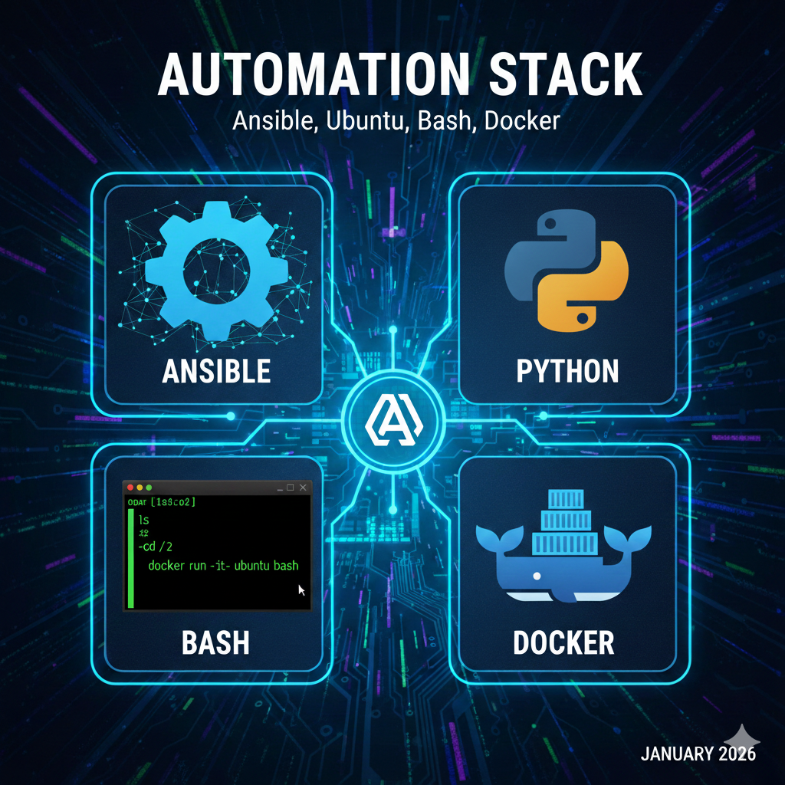
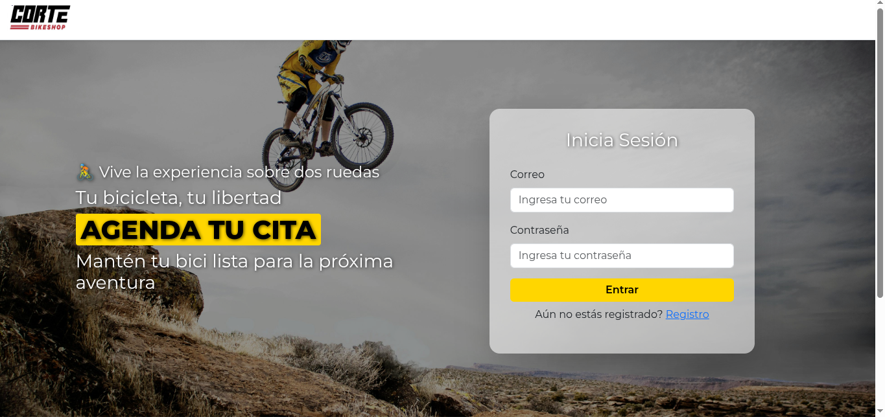
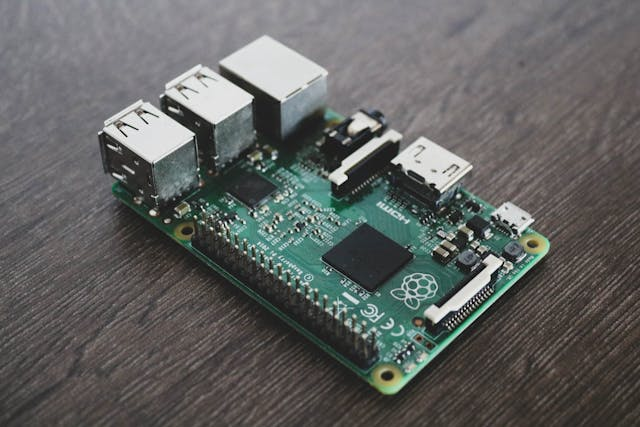
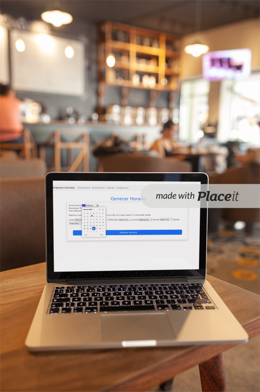
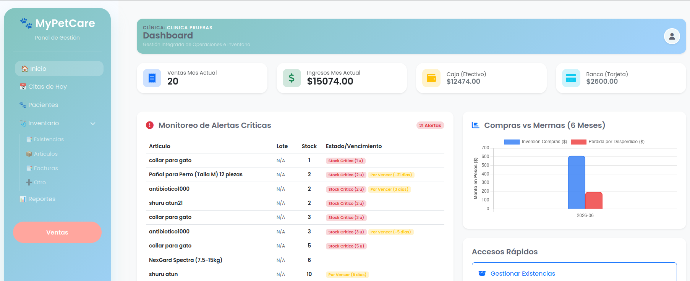

Proyectos

Sistema de Monitoreo - Docker/Ansible
Sistema de monitoreo de VM y servidores Linux. Mediante Script en Bash, Docker y Ansible para automatizacion.
Ver proyecto
Gestión Clientes y Reservaciones
Aplicación web para registrar clientes y agendar citas de taller. Backend en Python (Flask) con base de datos MySQL/SQLite.
Ver proyecto
Servidor Nginx en Docker
Despliegue de una aplicación Flask detrás de un servidor NGINX en Raspberry Pi Zero 2 W, utilizando Docker y Portainer.
Ver proyecto
Configurando Túnel Cloudflare
Exposición selectiva de servicios web alojados en Docker mediante un túnel seguro en Cloudflare en Raspberry Pi Zero 2 W.
Ver proyecto
Employee & Schedule Manager
Aplicación web para la gestión de empleados y la generación de horarios semanales, con funciones CRUD y administración de datos.
Ver proyecto
MyPetCare
En DesarrolloPlataforma integral para el seguimiento de salud, citas veterinarias y registro de mascotas. Gestión de historial clínico y recordatorios personalizados.
Ver proyecto